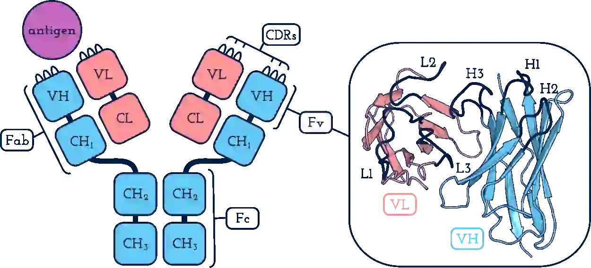

生物学术语与概念¶
LDDT¶
参考了一篇 2013 年的论文: lDDT: a local superposition-free score for comparing protein structures and models using distance difference tests.
动机: 蛋白结构预测技术需要一个客观的标准来评价其预测模型和真实结构的相似程度. 但基于对齐 (superposition) alpha 碳原子的方法会被 domain 移动强烈影响, 且不能评估局部原子级别的精确性.
计算方法:
纳米抗体¶
又称 single-domain antibody (sdAb), 是仅包含一个 domain - variable domain - 的抗体片段.
第一个 sdAb 是在骆驼科动物的 heavy-chain antibody 上通过生物工程获得的, 称作 VHH fragment. 鲨鱼科动物也有一种名为 IgNAR (Immunoglobin New Antigen Receptor) 的 heavy-chain antibody, 以它为原料获得的 sdAb 叫做 VNAR fragment.
纳米抗体和人抗体重链 variable domain 有约 10 个氨基酸的不同:
在 framework-2 region (第二个 framework region) 有 4 个标志性的纳米抗体特有的氨基酸, 位于纳米抗体的位点 42, 49, 50, 52;
更长的 CDR H3 loop 长度.
VHH 的 人源化 (hummanize)¶
将骆驼身上的抗体的 framework region 的氨基酸序列突变成类似人体的 framework region 序列.
抗体的组成¶
抗体由两条全同的重链和两条全同的轻链构成. 每条链又分为多个 domain, 每个 domain 可能又分为不同的 region. 每个重链都会和一个轻链通过二硫键配对; 两个重链-轻链对再通过重链间形成二硫键形成一个 "Y" 形结构.
典型长度：轻链通常在 211~217 个氨基酸长度; 重链通常在
重链包含 VH1, CH1, CH2, CH3 四个 domain. 第一个字母 V/H 表示 variable/constant (可变/恒定), 第二个字母表示这是重链 (Heavy chain), 第三个数字就是编号.
轻链包含 VL, CL 两个 domain. 由于 Varialb 和 Constant 只有一个, 所以后面不带编号.

image taken from https://opig.stats.ox.ac.uk/webapps/sabdab-sabpred/static/img/antibody_schematic.png
{kind=link}
Fab¶
Antigen-binding fragment 的缩写. 由四个 domain 构成, 分别是: VH, VL, CH1, CL1; 即重链和轻链各自贡献一组 constant 和 variable domain. 通过前面的定义可以看出 Fab 就是 "Y" 的两个分支中的一个.
Antigen-binding site (抗原结合位点)¶
又称 paratope, 负责识别和结合抗原, 位于抗体 "Y" 形结构的分叉末端. 每个抗体都有 2 个 paratope, "Y" 形的每一端都有一个. 一个 antigen-binding site 包含 6 个 CDR, 三个来自重链, 三个来自轻链. 综上所述, paratope 就是 "Y" 的尖端部分.
Fv¶
Varialbe fragment 的缩写, 其实一个 Fv 就是抗体的一个 variable domain, 所以我认为 Fv 就是 variable domain 的别名.
Fv 的组成: 由三个 CDR 区域 (又称 hypervariable region) 和 4 个 framework region (简称 FR) 组成. 顺序为 FR1, CDR1, FR2, CDR2, FR3, CDR3, FR4. FR 不易突变, CDR 十分容易突变.
scFV¶
single-chain Fv. 是一种单链人工合成抗体, 通过将 VH 和 VL 通过生物工程融合成一条链得来.
NOTE: 有的 PDB 结构会把里面储存的 VH-VL 复合物叫做 "scFv"。如 PDBID：8OZ3 里面的 H 和 L 链都标注成了 scFv，但它实际上是 VH 和 VL。 我认为这是结构解析者不严谨——明明是两条链，怎么可能是 "single-chain" 呢？
Motif¶
中文可译“基序”或“模体”。
sequence motif: 一小段保守序列, 和某种特定功能相关. 比如 Zn-finger motif 只有 10~20 个残基.
structure motif: 有生物学意义的少量氨基酸形成的三维空间排列（结构）。构成结构模体的氨基酸可以来自不同的蛋白质链，只要它们在空间上靠近就可以。